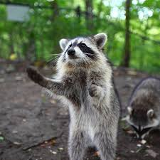
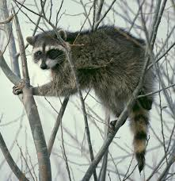
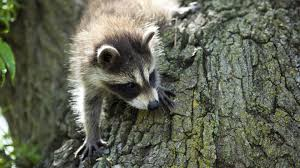

Raccoons are very interesting animals. Although in the wild they are mostly known as scavengers or even referred to as "Trash Pandas" I think people just need to learn more about the animal.

Many people don't know that some raccoons are actually housepets. Their not quite the same as dogs or cats but their unique. And that is what makes them special.
You can find examples of raccoons as house pets by just looking it up, it often happens when they are found young and without parents. Even if some people were to argue that raccoons are not meant to be pets, I would say that they are less meant to be wild animals. When they are animals they are forced to eat garbage and often get sick. It is very possible and realistic in some states.

You cannot own a raccoon in every state, most states have varying laws on what they do and do not allow. Raccoons in the wild often are sick, and rabid so if someone was to see on in the wild it would be best to stay away.
It is legal to have a pet raccoon in the following states: Arkansas, Delaware, Florida, Indiana, Nebraska, North Carolina, South Carolina, Virginia, Michigan, Wyoming, Wisconsin, Texas, Rhode Island, Oklahoma, Pennsylvania and West Virginia. Although all other states have it techincally being illegal or maybe no declared law at all, I can see a lot of possibility for change in this law.

Raccoons do have a bad reputation. But it is only partially earned. Many raccoons are not hostile and if a raccoon needs help I would encourage someone to take caution but try to get it help. At the very least call animal control so no other person could get hurt and if the raccoon is sick it can be put down.